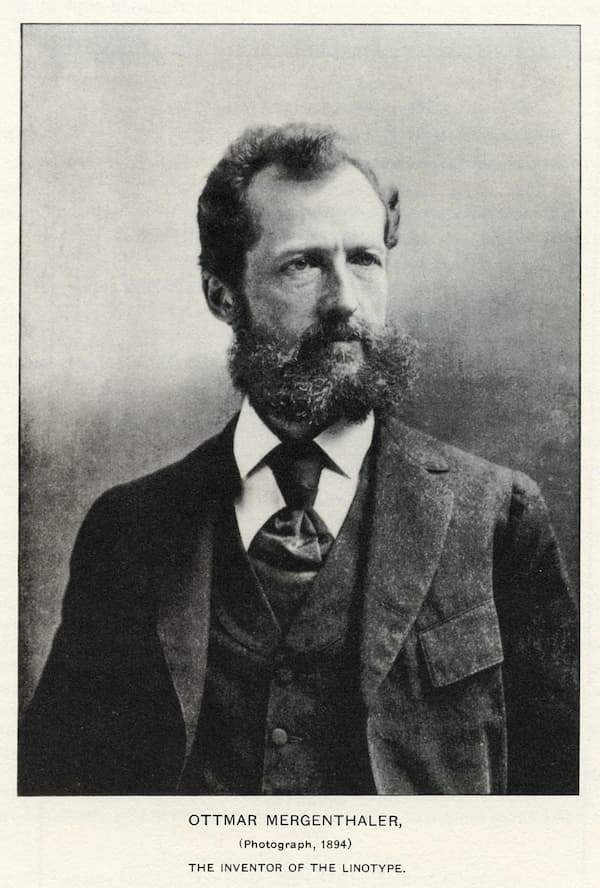
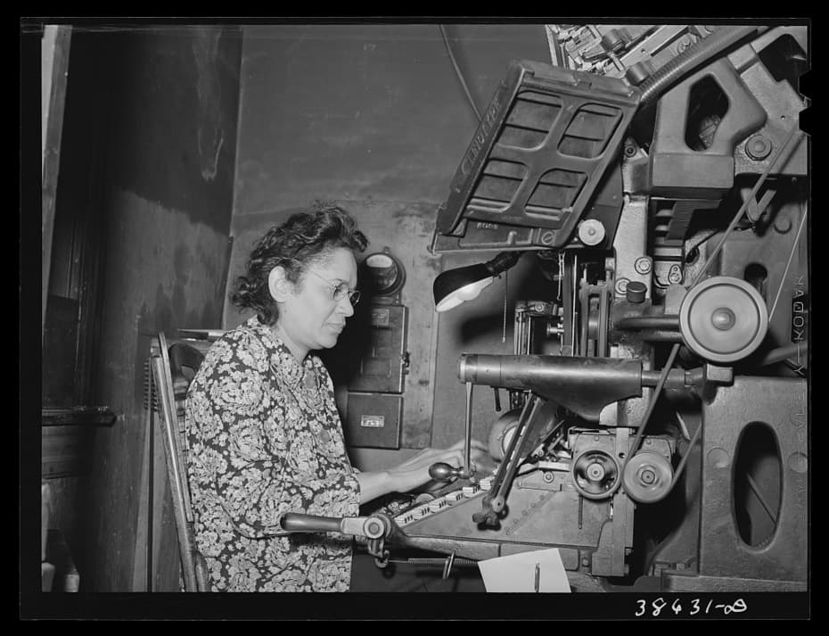
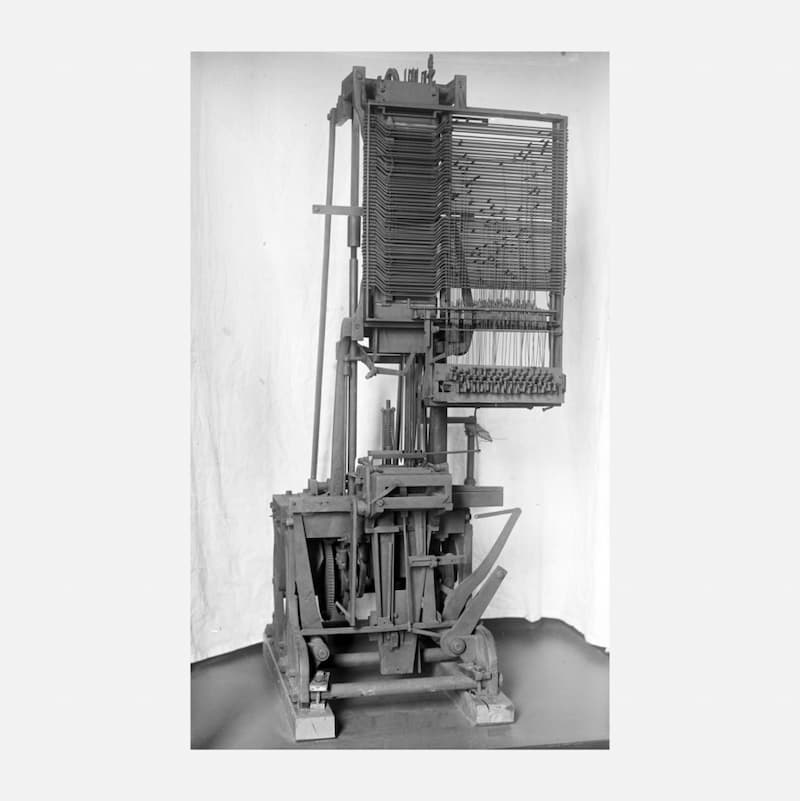
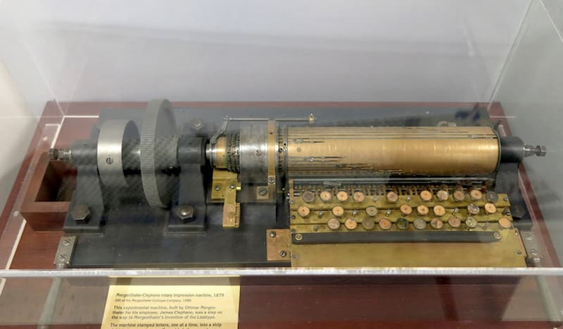

Во второй половине XIX века полиграфическая индустрия столкнулась с серьёзным препятствием. Спрос на печатную продукцию рос стремительно: газеты расширялись, реклама захватывала всё новые площади, читатели хотели получать информацию быстрее и в большем объёме. Но набор текста оставался таким же, каким был столетиями.
Наборщик вручную выбирал из кассет свинцовые литеры, расставлял их в строку, а после печати — разбирал каждую строку обратно и раскладывал буквы по местам. Это был кропотливый, медленный и дорогой труд. Один опытный наборщик мог набрать за час всего несколько сотен букв. Для растущих тиражей этого катастрофически не хватало.
Инженеры и изобретатели по всему миру искали решение. Многие пытались механизировать процесс, но все ранние конструкции оказывались слишком сложными или ненадёжными. Нужен был принципиально новый подход.
Оттмар Мергенталер родился в 1854 году в Германии в семье часовщика. С детства он работал с мелкими механизмами, изучал точную механику. В 1872 году, в восемнадцать лет, эмигрировал в Америку, поселился в Вашингтоне и открыл мастерскую по ремонту часов и научных приборов.
Именно в его мастерскую однажды пришёл изобретатель Чарльз Крэйг с идеей машины для набора текста. Мергенталер заинтересовался проектом, но быстро понял: конструкция нежизнеспособна. Вместо того чтобы просто починить чужую машину, он решил создать свою.
Первые эксперименты велись с вертикальными металлическими планками, на которых вырезались целые строки текста. Но эта система была громоздкой и негибкой. Тогда Мергенталер совершил ключевой прорыв: он предложил использовать отдельные матрицы — маленькие медные формы, каждая из которых содержала отпечаток одной буквы. Матрицы должны были сами складываться в строку, затем отливаться из расплавленного свинца, а после — автоматически возвращаться в исходные каналы.
Это была революционная идея. Наборщик больше не касался букв руками. Он работал с клавиатурой, как на печатной машинке, а машина выполняла всю остальную работу: собирала строку из матриц, отливала её из горячего металла, а затем распределяла матрицы обратно по кассетам.

В 1886 году произошло событие, которое определило дальнейшую судьбу изобретения. Газетный синдикат во главе с Джеймсом Гордоном Беннеттом и другими крупными издателями выкупил права на машину Мергенталера за $300 000 — по тем временам колоссальная сумма.
Прототип получил название «Blower» — из-за системы подачи воздуха, которая использовалась для распределения матриц. А само устройство было официально названо «линотип» — от английского line-o-type, что означает «строка-тип». Название точно отражало суть: машина отливала не отдельные буквы, а целые строки.
Первая демонстрация линотипа состоялась в редакции газеты New York Tribune. Машина набирала текст в четыре раза быстрее опытного наборщика. Эффект был ошеломляющим. Газеты, которые раньше тратили часы на вёрстку, теперь могли готовить номера за считаные минуты.
Начались массовые поставки. Линотипы устанавливались в редакциях по всей Америке, а затем и в Европе. Тиражи газет выросли многократно, стоимость печати упала, и новости стали доступны широким слоям населения. Для XIX века это было сопоставимо с появлением интернета в XXI — скорость распространения информации увеличилась на порядок.
Но за внешним триумфом скрывалась драма. Ключевую роль в развитии проекта сыграл бизнесмен Уайтлоу Рид — главный инвестор и фактический руководитель компании Linotype. Рид видел в линотипе прежде всего источник дохода. Он требовал максимально ускорить производство и начать продажи как можно скорее.
Мергенталер возражал. Машина была ещё сырой, требовала доработок, и изобретатель настаивал на том, что нельзя выпускать несовершенные экземпляры. Рид не слушал. Он считал, что рынок сам покажет, что нужно исправить, а время — деньги.
Конфликт нарастал. Инвесторы начали удерживать роялти Мергенталера, ссылаясь на различные предлоги. Решения изобретателя по улучшению конструкции саботировались или откладывались. Фактически Мергенталера отстранили от управления собственным детищем.
Изобретатель был вынужден наблюдать со стороны, как его машину производят с компромиссами, на которые он никогда бы не пошёл. Линотипы первых выпусков часто ломались, требовали постоянного ремонта и вызывали нарекания покупателей. Мергенталер предупреждал об этом, но его не слушали.
Несмотря на все препятствия, Мергенталер продолжал работать. В начале 1890-х годов он создал «Симплекс» — значительно улучшенную модель линотипа. Новая машина была надёжнее, быстрее и точнее. Она использовала усовершенствованную систему матриц, более стабильный механизм отливки и автоматическое распределение.
Рынок отреагировал мгновенно. «Симплекс» стал коммерческим хитом. Линотипы начали устанавливать не только в США, но и в Канаде, Англии, странах Европы. Газеты, издательства, типографии — все хотели получить эту машину.
К 1894 году только в Северной Америке работало более 200 линотипов. К 1900 году — уже более 1000. Машина стала стандартом индустрии.
Однако сам Мергенталер от этого триумфа получил мало. Ему пришлось согласиться на урезанное вознаграждение — инвесторы предложили ему единовременную выплату вместо обещанных процентных отчислений. Формально это было немало, но по сравнению с прибылями компании — ничтожно.

Постоянные стрессы, судебные тяжбы с инвесторами, нервное перенапряжение — всё это подорвало здоровье изобретателя. В начале 1890-х годов у него диагностировали туберкулёз.
Врачи рекомендовали покой и лечение. Но Мергенталер продолжал работать. Он пытался написать автобиографию — хотел оставить после себя историю своего изобретения. Однако рукопись, по горькой иронии, сгорела при пожаре в его доме.
28 апреля 1899 года Оттмара Мергенталера не стало. Ему было всего 45 лет.
Широкого прижизненного признания он так и не получил. Ни заслуженного богатства. Ни спокойной старости. К моменту его смерти в мире работало уже тысячи линотипов, но имя изобретателя было известно лишь в узких профессиональных кругах.
На надгробии Мергенталера высечены слова, которые лучше всего описывают его вклад: «Он сделал возможным быстрое распространение знаний».
После смерти Мергенталера линотип не просто выжил — он стал доминирующей технологией в полиграфии на протяжении почти ста лет.
За это время было выпущено свыше 100 000 машин. Появились конкуренты: компания «Интертип» выпускала совместимые модели, «Монотип» предлагал альтернативную технологию построчного набора, а «Типограф» Роджерса пытался создать собственный вариант. Но линотип оставался эталоном.
Конструкцию постоянно модернизировали. Появились новые шрифты, улучшенные сплавы для отливки, более точные механизмы распределения матриц. Линотип стал стандартом горячего набора — технологии, при которой каждая строка текста отливается из расплавленного свинца.
Подавляющее большинство газет, книг и журналов XX века было набрано именно на линотипе. Без этой машины были бы невозможны массовые тиражи, доступные цены на печатную продукцию и тот информационный бум, который определил развитие цивилизации в XX столетии.
Но у любой технологической эпохи есть финал. В 1950–60-е годы на смену горячему набору пришёл фотонабор — технология, использующая свет и фотоплёнку вместо расплавленного металла. Фотонабор был чище, безопаснее и позволял работать с более широким набором шрифтов.
Затем появились настольные издательские системы — компьютеры, программы вёрстки, цифровые шрифты. Набор текста стал полностью электронным. Свинцовые литеры, расплавленный металл, тяжёлые матрицы — всё это ушло в прошлое.
Заводы Linotype закрывались один за другим. Компании сливались и поглощали друг друга. Легендарная Linotype трансформировалась из производителя тяжёлых промышленных машин в цифровую шрифтовую библиотеку — крупнейший архив и дистрибьютор шрифтов в мире.
Парадокс: компания, начинавшая с чугуна и свинца, закончила пикселями и векторными контурами. Сегодня Linotype GmbH — это бренд, который хранит и лицензирует тысячи шрифтов, включая такие легендарные, как Helvetica, Times New Roman и Optima.

Сегодня действующие линотипы — большая редкость. Их можно найти в музеях полиграфии, в частных коллекциях и у энтузиастов высокой печати — людей, которые бережно восстанавливают эти машины и продолжают на них работать.
Снимаются документальные фильмы, пишутся книги, создаются онлайн-сообщества. Всё это — попытки сохранить память о человеке, который подарил миру скорость, с которой мы сегодня потребляем информацию.
Без Мергенталера не было бы массовых газет. Не было бы дешёвых книг. Не было бы той информационной революции, которая предшествовала цифровой. Линотип — это мост между ремеслом и индустрией. Между буквой в руках наборщика и буквой на экране вашего смартфона.
История линотипа напоминает нам: за каждой технологической революцией стоит конкретный человек. Инженер, который осмелился спросить: «А можно ли это сделать лучше?» И ответил на этот вопрос — ценой здоровья, богатства, но не убеждений.
Мы в ООО «ИПК Лазурь» работаем на стыке традиций и современных технологий. История линотипа нам близка, потому что она — о том, как инновации меняют полиграфию.
Мергенталер спросил: «Можно ли набирать текст быстрее?» — и получил линотип. Мы спрашиваем: «Как сделать вашу печатную продукцию лучше?» — и предлагаем решения.
Наши направления:
Рулонная печать, листовая, послепечатная отделка, тиснение, конгрев, выборочный УФ-лак — всё под одной крышей.
Приходите с макетом — разберёмся.
И обещаем: наши машины работают без свинца и расплавленного металла. Но с той же страстью к каждой букве, каждой строке, каждому тиражу.
ООО «ИПК Лазурь»
Помним историю. Создаём будущее. Печатаем с душой.